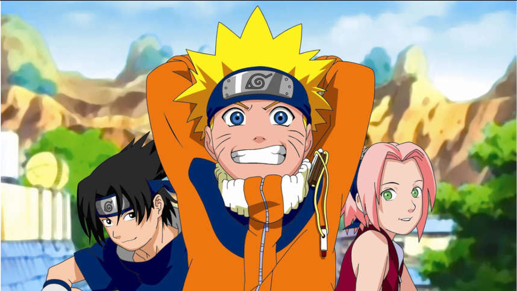

Главное меню
Персонажи
Аниме
Главное меню
Персонажи
Аниме

«Наруто» (яп. NARUTO - ナルト -) — сёнэн-манга Масаси Кисимото, рассказывающая о жизни шумного и непоседливого ниндзя-подростка Наруто Удзумаки, мечтающего достичь всеобщего признания и стать Хокагэ — главой своего селения и сильнейшим ниндзя. Чтобы добиться уважения окружающих, ему предстоит пройти через тысячи препятствий: экзамены ниндзя, различные миссии и сражения.
Манга выпускалась с 21 сентября 1999 года по 10 ноября 2014 года издательством Shueisha в журнале Weekly Shonen Jump. Объединена в 72 танкобона.
С момента начала трансляции в эфир вышло свыше 700 серий. В аниме-адаптацию манги входят: два аниме-сериала, одиннадцать анимационных фильмов и восемь OVA. На основе манги и аниме были созданы также видеоигры, романы, ранобэ и коллекционная карточная игра.